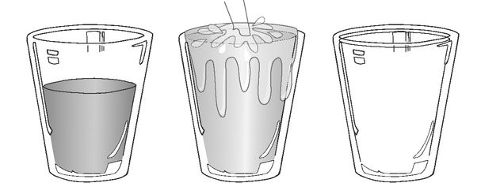

CHAPTER 5
INFLUENCES
Hopefully by now you understand exactly how important your choices are. Even those that seem insignificant, when compounded, can make an extreme impact on your life. We’ve also discussed the fact that you are 100 percent responsible for your life. You alone are responsible for the choices you make and the actions you take. That said, you must also realize your choices, behaviors, and habits are influenced by very powerful external forces. Most of us aren’t aware of the subtle control these forces have on our lives. For you to sustain your positive trajectory toward your goals, you’ll need to understand and govern these influences so they will support rather than derail your journey toward success. Everyone is affected by three kinds of influences: input (what you feed your mind), associations (the people with whom you spend time), and environment (your surroundings).
I. Input: Garbage In, Garbage Out
If you want your body to run at peak performance, you’ve got to be vigilant about consuming the highest-quality nutrients and avoiding tempting junk food. If you want your brain to perform at its peak, you’ve got to be even more vigilant about what you feed it. Are you feeding it news summaries or mind-numbing sitcoms? Are you reading the tabloids, or SUCCESS? Controlling the input has a direct and measurable impact on your productivity and outcomes.
Controlling what our brains consume is especially difficult because so much of what we take in is unconscious. Although it’s true that we can eat without thinking, it’s easier to pay attention to what we put in our bodies because food doesn’t leap into our mouths. We need an extra level of vigilance to prevent our brains from absorbing irrelevant, counterproductive or downright destructive input. It’s a never-ending battle to be selective and to stand guard against any information that can derail your creative potential.
Your brain is not designed to make you happy. Your brain has only one agenda in mind: survival. It is always watching for signs of “lack and attack.” Your brain is programmed to seek out the negative—dwindling resources, destructive weather, whatever’s out to hurt you. So when you switch on that radio on the way to work and get bombarded with all those reports about robberies, fires, attacks, the tanking economy, your brain lights up—it now will spend all day chewing over that feast of fear, worry, negativity. Same deal when you tune into the evening news after work. More bad news? Perfect! Your mind will stew on that all night long.
Left to its own devices, your mind will traffic in the negative, worrisome, and fearful all day and night. We can’t change our DNA, but we can change our behavior. We can teach our minds to look beyond “lack and attack.” How? We can protect and feed our mind. We can be disciplined and proactive about what we allow in.
To identify the influence that information and your environment has on you, complete the Input Influences sheet Sheet on page 171, or download at
www.TheCompoundEffect.com/free
Don’t Drink Dirty Water
You get in life what you create. Expectation drives the creative process. What do you expect? You expect whatever it is you’re thinking about. Your thought process, the conversation in your head, is at the base of the results you create in life. So the question is,
What are you thinking about? What is influencing and directing your thoughts? The answer: whatever you’re allowing yourself to hear and see. This is the input you are feeding your brain. Period. See
Figure 12.
Your mind is like an empty glass; it’ll hold anything you put into it. You put in sensational news, salacious headlines, talk-show rants, and you’re pouring dirty water into your glass. If you’ve got dark, dismal, worrisome water in your glass, everything you create will be filtered through that muddy mess, because that’s what you’ll be thinking about. Garbage in, garbage out. All that drive-time radio yak about murders, conspiracy, deaths, economy, and political battles drives your thinking process, which drives your expectations, which drives your creative output. That IS bad news. But just like a dirty glass, if you flush it with clean, clear water under the faucet long enough, eventually you’ll end up with a glass of pure, clear water. What is that clear water? Positive, inspirational, and supportive input and ideas. Stories of aspiration, people who, despite challenges, are overcoming obstacles and achieving great things. Strategies of success, prosperity, health, love, and joy. Ideas to create more abundance, to grow, expand, and become more. Examples and stories of what’s good, right, and possible in the world. That’s why we work so hard at SUCCESS magazine. We want to provide you with those examples, those stories and the key take-aways you can use to improve your view of the world, yourself, and the results you create. That’s also why I read something inspirational and instructional for thirty minutes in the morning and evening, and have personal-development CDs playing in my car. I’m flushing my glass and feeding my mind. Does this give me an edge over the guy who gets up and first thing reads the newspaper, listens to news radio on his commute to and from work, and watches the evening news before going to bed? You bet it does! And it can for you, too.
Flush out the negative (dirty water) with positive, inspirational and supportive ideas (clean water).

Step 1: Stand Guard
Unless you decide to hole up in a cave or on a desert island, you’re going to get dirty water in your glass. It’s going to be on billboards, on CNN while you’re walking through the airport, on the screaming tabloid headlines at the checkout when you’re buying groceries, etc. Even your friends, family members, and your own negative mental tapes can flood dirty water into your glass.
But that doesn’t mean you can’t take steps to limit your exposure to all that grime. Maybe you can’t avoid the tabloids stacked up at the checkout register, but you can cancel your subscriptions. You can refuse to listen to the radio to and from work and instead put in an instructional and inspirational CD. You can turn off the evening news and talk to your loved ones instead. You can buy a DVR and record only those programs you feel are truly educational and life-affirming—and speed through the commercials aimed at making you feel inadequate or lacking unless you buy more crap.
I didn’t really grow up with TV; I remember watching Solid Gold and The A-Team (remember them?), but television wasn’t a big part of our family life. I managed somehow to thrive without it, and that’s given me a clearer perspective when I watch an occasional program now. Sure, I’ll laugh along with the sitcom, but afterward, I feel the same as if I ate fast food—bloated and malnourished. And I can’t get over how commercials prey on our psychology, our fears, pains, needs, and weaknesses. If I walk through life thinking that I’m not enough just as I am—that I need to buy this, that, and the other thing to be okay—how can I expect to create amazing results?
It’s estimated that Americans (twelve and older) spend 1,704 hours watching TV per year. That averages out to 4.7 HOURS per day. We’re spending almost 30 percent of our waking hours watching TV. Almost thirty-three hours per week—more than one whole day each week! It’s the equivalent of watching TV for two solid months out of every twelve! WOW! And people wonder why they can’t get ahead in life?
Put Yourself on a Media Diet
The media thrives on taking us hostage. Ever been stuck on the freeway with traffic backed up for miles, making you late, wondering what the heck’s holding everything up? Sure enough, when you finally get close, you see that nothing physical is blocking the flow of cars; the wreck clearly happened a while ago and has since been moved to the side of the freeway. The 3-mph crawl was caused by people rubbernecking! Now you’re really irritated. But what happens when your car passes the wreck? You slow way down, take your eyes off the road in front of you, and crane your own neck!
Why do good, decent people want to see something tragic and grotesque? It’s our genetic heritage, going back to our prehistoric sense of self-preservation. We can’t help ourselves. Even if we’re adept at avoiding negativity, and have trained ourselves to be relentlessly positive, when it comes to sensationalism, our basic nature can’t resist. Media masters understand that. They know your nature, in many ways better than you. The media has always used shocking and sensational headlines to draw attention. But today, instead of three news TV and radio networks, there are hundreds, running 24/7. Instead of a few newspapers, there are endless portals reaching us from our computers to our phones. The competition for your attention has never been bloodier, and the media jockeys continually up the ante in shock value. They find a dozen or so of the most heinous, scandalous, criminal, murderous, bleak, and horrid things that happen in the world each day, and parade them through our papers, news channels, and the Web over and over. Meanwhile, during that same twenty-four-hour period, millions of wonderful, beautiful, incredible things have happened. Yet we hear very little about them. In being wired to seek out the negative, we create the demand for more and more. How could the positive news stories ever hope to compete with those ratings or advertising dollars?
Let’s go back to our freeway. Instead of a wreck on the side of the road, what if there was the most stunning, miraculous sunset you’ve ever seen? What would happen to the traffic then? I’ve seen this many times. It whizzes by at top speed.
The great danger of the media is that it gives us a very perverted view of the world. Because the focus and the repetition of messaging is on the negative, that’s what our minds start believing. This warped and narrow view of what’s not working has a severe influence on your creative potential. It can be crippling.
My Personal Junk Filter
I’ll share what I do to safeguard my mind. But I warn you, I have a rigorous mental diet. You’ll want to adjust to your own preferences, but this system has worked beautifully for me.
As you might guess, I don’t watch or listen to any news and I don’t read any newspapers or news magazines. Ninety-nine percent of all news has no bearing on my personal life or my personal goals, dreams, and ambitions anyway. I have set up a few RSS feeds identifying the news and industry updates that do pertain to my direct interests and goals. The news that’s helpful to me gets plucked out of the fray so I don’t have to get any mud slung into my glass of water. While most people wade through hours of irrelevant garbage that hampers their thinking and crushes their spirit, I get the most productive information I need when I need it, in less than fifteen minutes a day.
Step 2: Enroll in Drive-Time U
It’s not enough to eliminate negative input. To move in a positive direction, you must flush out the bad and fill up on the good. My car won’t move without two things: gasoline and an ever-present library of instructional CDs I listen to as I drive. The average American drives about twelve thousand miles a year. That’s three hundred hours of flushing potential right there! Brian Tracy taught me the concept of turning my car into a mobile classroom. He explained to me that by listening to instructional CDs as I drive, I gain knowledge equivalent to two semesters of an advanced college degree—every year. Think about it; using the time you’re currently wasting by listening to drive-time radio, you could obtain the equivalent of Ph.D. in leadership, sales success, wealth building, relationship excellence—or whatever course you choose. This commitment, in combination with your reading routine, separates you from the herd of average—one CD, DVD, or book at a time.
II. Associations: Who’s Influencing You?
Birds of a feather flock together. The people with whom you habitually associate are called your “reference group.” According to research by social psychologist Dr. David McClelland of Harvard, your “reference group” determines as much as 95 percent of your success or failure in life.
Who do you spend the most time with? Who are the people you most admire? Are those two groups of people exactly the same? If not, why not? Jim Rohn taught that we become the combined average of the five people we hang around the most. Rohn would say we could tell the quality of our health, attitude, and income by looking at the people around us. The people with whom we spend our time determine what conversations dominate our attention, and to which attitudes and opinions we are regularly exposed. Eventually, we start to eat what they eat, talk like they talk, read what they read, think like they think, watch what they watch, treat people how they treat them, even dress like they dress. The funny thing is, more often than not, we are completely unaware of the similarities between us and our circle of five.
How are we not aware? Because your associations don’t shove you in a direction; they nudge you ever so slightly over time. Their influence is so subtle that it’s like being on an inner tube out in the ocean, feeling like you’re floating in place, until you look up and realize the gentle current has pushed you a half mile down the shore.
Think of your friends who order greasy appetizers or a cocktail before dinner, and that’s their routine. Hang out with them enough, and you’ll find yourself grabbing for cheese nachos and potato skins, and joining them for that extra beer or glass of wine, matching their pace. Meanwhile, your other friends order healthy food and talk about the inspiring books they’re reading and their ambitions in their businesses, and you begin to assimilate their behaviors and habits. You read and talk about what they talk about, you see the movies they’re excited about, and you go to the places they recommend. The influence your friends have over you is subtle and can be positive or negative; either way, the impact is incredibly powerful. Watch out! You cannot hang out with negative people and expect to live a positive life.
So, what is the combined average income, health, or attitudes of the five people you spend most of your time with? Does the answer frighten you? If so, the best way to increase your potential for whatever traits you desire is to spend the majority of your time with people who already possess those traits. You will then see the power of influence work for you, rather than against you. The behaviors and attitudes which helped them acquire the success you admire will begin to become part of your daily routine. Hang around them long enough, and you’re likely to realize similar successful outcomes in your life.
If you haven’t already, jot down the names of those five people you hang around the most. Also write down their main characteristics, both positive and negative. It doesn’t matter who they are. It could be your spouse, your brother, your neighbor, or your assistant. Now, average them out. What’s their average health, and bank balance? What’s their average relationship like? As you look at your results, ask yourself, “Is this list okay for me? Is this where I want to go?”
It’s time to reappraise and reprioritize the people you spend time with. These relationships can nurture you, starve you, or keep you stuck. Now that you’ve started to carefully consider with whom you spend your time, let’s go a little deeper. As Jim Rohn taught me, it’s powerful to evaluate and shift your associations into three categories: dissociations, limited associations, and expanded associations.
Dissociations
You guard against the influences your children are exposed to, and the people they hang around. You are aware of the influence these people could have on your children and the choices they might make as a result. I believe this same principle should apply to you! You already know this: There are some people you might need to break away from. Completely. This might not be an easy step to take, but it’s essential. You have to make the hard choice not to let certain negative influences affect you anymore. Determine the quality of life you want to have, and then surround yourself with the people who represent and support that vision.
I’m constantly weeding out of my life people who refuse to grow and live positively. Growing and changing your associations is a lifelong process. Some people might say I’m too rigorous about it, but I’d like to be more so. I had a business relationship with someone I really liked, but when the economy got difficult, most of his conversation was focused on how horrible things were, how much his company was feeling the hit, and how hard it was out there. I said, “Man, you’ve got to stop working on your presentation about how bad life is. I can hear you collecting all the data points to reinforce your beliefs.” He persisted in seeing everything as more dour and hopeless than it was, and I decided we had no business doing business together.
When you make the tough decision to put up boundaries between you and people who drag you down, realize that they’ll fight you—especially those closest to you. Your decision to live a more positive, goal-oriented life will be a mirror to their own poor choices. You will make them uncomfortable and they will attempt to pull you back down to their level. Their resistance doesn’t mean they don’t love you or want the best for you—it’s actually not about you at all. It’s about their fear and their guilt about their own poor choices and lack of discipline. Just know that breaking away won’t be easy.
Limited Associations
There are some people you can spend three hours with, but not three days. Others you can spend three minutes with, but not three hours. Always remember that the influence of associations is both powerful and subtle. The person you’re walking with can determine whether you slow your pace or quicken it, literally and figuratively. Similarly, you can’t help but be touched by the dominant attitudes, actions and behaviors of the people with whom you spend time.
Decide how much you can “afford” to be influenced, based on how those people represent themselves. This is difficult, I know. I have had to do this on several occasions, even with close family members. I WILL NOT, however, allow someone else’s actions or attitudes to have a dampening influence on me.
I’ve got a neighbor who’s a three-minute friend. For three minutes, we have a great chit-chat, but we wouldn’t mesh for three hours. I can hang out with an old high-school friend for three hours, but he’s not a three-day guy. And, then there are some people I can hang around for a few days, but wouldn’t go on an extended vacation with. Take a look at your relationships and make sure you’re not spending three hours with a three-minute person.
Expanded Associations
We’ve just talked about weeding out negative influencers. While you’re doing that, you’ll also want to reach out. Identify people who have positive qualities in the areas of life where you want to improve—people with the financial and business success you desire, the parenting skills you want, the relationships you yearn for, the lifestyle you love. And then spend more time with them. Join organizations and businesses and health clubs where these people gather and make friends. Ahead, you’ll see how I even used to drive to a different town to spend quality time—with fortuitous results.
I rave about Jim Rohn throughout this book because, aside from my father, Jim remains my foremost mentor and influencer. My relationship with Jim perfectly exemplifies an expanded association. While I got to share a few private meals and spend a little time with him during our interviews and backstage before events, most of my time with Jim was spent listening to him in my car or reading his words in my living room. I have spent more than a thousand hours getting direct instruction from Jim, and 99 percent of that was through books and audio programs. What’s exciting about that is, no matter where you are in your life—maybe busy at home with small children or caretaking aging parents, working long hours with people with whom you have little in common, or living out in the country far from the nearest office building—you, too, can have almost any mentor you want, if he or she has gathered their best thoughts, stories, and ideas into books, CDs, DVDs, and podcasts. You have an unlimited bounty from which to draw. Take advantage of it.
If you want to have a better, deeper, more meaningful relationship, ask yourself, “Who has the type of relationship I want? How can I spend (more) time with that person? Who can I meet who can positively influence me?” Let their glow rub off on you. Befriend the person you think is the biggest, baddest, most successful person in your field. What do they read? Where do they go for lunch? How can that association influence you? You can build these expanded associations by joining networking groups, Toastmasters, and similar organizations. Find the charity organizations, symphonies, country clubs, where the people you want to emulate gather.
Find a Peak-Performance Partner
Another way to increase your exposure to expanded associations is by teaming up with a peak performance partner, someone as equally committed to study and personal growth as you. This person should be someone you trust, someone bold enough to tell you what they really think about you, your attitudes, and performance. It could be that this person is a longtime friend, but he or she may be someone who doesn’t know you well at all. The point is to get (and give) an unbiased, honest, outside perspective.
My current “accountability partner” is my good friend Landon Taylor. As I mentioned before, we have a thirty-minute call every Friday to discuss our weekly wins, losses, fixes, “ah-has,” and where we are on our growth plans. The anticipation of the call and knowing I have to be accountable to Landon keeps me extra committed throughout the week.
I make a record of Landon’s losses or any feedback he needs and make sure to ask him about it the next week. He does the same for me. That way we hold each other accountable. He might say, “Okay, you screwed up here last week and admitted it and committed to change. What did you do about that this week?” Life is life. We’re both busy executives, but it’s amazing to me that we actually end up doing this every week without fail. It’s not easy. Sometimes I’ll be flying through my day and think, “Oh, crud! I have to do this.” But often in the middle of the call, I’ll think, “I’m so glad we’re having this conversation!” Even in preparing for it, and thinking of my big wins and losses for the week, I learn about myself. This week I told Landon, “You know, I’m in the middle of so many things. I’m writing my book. I’m having a lot of realizations, and so many ah-has, but not one thing that’s really compelling.” He said, “Let this be the last week that you don’t come to the table with an ah-ha.” Gulp. “Don’t shortchange me,” he said. Point taken. In reality, I was shortchanging myself by not identifying one thing memorable enough to share.
I have a serious challenge for you if you’re up for it. Want real feedback? Find people who care enough about you to be brutally honest with you. Ask them these questions: “How do I show up to you? What do you think my strengths are? In what areas do you think I can improve? Where do you think I sabotage myself? What’s one thing I can stop doing that would benefit me the most? What’s the one thing I should start doing?”
Invest in Mentorship
Paul J. Meyer is another man who served as a mentor to me. Paul passed away in 2009 at age eighty-one. Whenever I thought I was really doing things, really playing at a high level, I’d get around Paul—he was my reality check. What he did before lunch was mind-boggling to me. I got to spend a lot of time with him; Paul bought one of my companies, and then I did a turnaround for one of his companies. He was a very powerful spirit in my life.
After spending a couple of hours with Paul, hearing about all his plans and ventures and activities, my head would spin. Just trying to make sense of all he had going on exhausted me. After time with Paul, I’d want to go take a nap! But my association with him raised my game. His walking pace was my running pace. It expanded my ideas about how big I could play and how ambitious I could be. You have to get around people like that!
You’re never too good for a mentor. During my interview with Harvey Mackay, he told me, “I have had twenty coaches, if you can believe it. I have a speech coach, I have a writing coach, I have a humor coach, I’ve got a language coach, and on and on.” I have always found it interesting that the most successful people, the truly top performers, are the ones willing to hire and pay for the best coaches and trainers there are. It pays to invest in your improved performance.
Finding and engaging a mentor doesn’t need to be a mysterious or intimidating process either. When I sat down with Ken Blanchard, he explained the simplicity of engaging a mentor (SUCCESS, January 2010): “The first thing you want to remember with a mentor is that it doesn’t need to take a lot of their time. The best advice I’ve ever gotten is in short clips, having lunch or breakfast with somebody, just telling them what I’m working on and asking their advice and all. You will be amazed how successful businesspeople are willing to be mentors to people when it’s not taking a lot of time.” John Wooden reinforces the point that others desire to be mentors (SUCCESS, September 2008): “Mentoring is your true legacy. It is the greatest inheritance you can give to others. And it should never end. It is why you get up every day. To teach and be taught.” He went on to explain that mentorship is also a two-way street. “An individual needs to be open to being mentored. It is our responsibility to be willing to allow our lives and our minds to be touched, molded, and strengthened by the people who surround us.”
Develop Your Own Personal Board of Advisors
As part of my plan to be wiser, more strategic, and operate more effectively, as well as expand the time and interaction I have with high-minded leaders, I’ve been developing a board of advisors in my personal life.
I’ve hand-selected a dozen people because of their areas of expertise, creative thinking ability, and/or my great respect for who they are. Once a week I reach out to a few of them and solicit ideas, run thoughts by them, and ask for feedback and input. Having started this process, I can tell you the benefits I’ve already received have been profound—far more than I anticipated! It’s surprising the genius people are willing to share when you show sincere interest.
Who should be on your personal board of advisors? Seek out positive people who have achieved the success you want to create in your own life. Remember the adage: “Never ask advice of someone with whom you wouldn’t want to trade places.”
III. Environment: Changing Your View Changes Your Perspective
When I was in real estate, working in the East Bay of San Francisco, I lived and worked within a very limited demographic. I saw the same kinds of people operating at the same level over and over. I knew that I needed to find an elevated circle of associations in order to go where I wanted to go.
I started driving across the bay to one of the richest and most beautiful spots on the planet, Tiburon in Marin County, north of San Francisco. If you’ve ever been to Monaco, that’s what Tiburon looks like, but far quainter. It’s a spectacular spot. I would go to a delightful seafood restaurant, Sam’s on the Wharf. The food was great, but more importantly, the restaurant was popular with the area’s more affluent residents.
Aside from going to Sam’s to expand my associations, I’d also sit on the wharf and look up at the hillside. I was mesmerized by the multimillion-dollar houses that hung off the cliffs. One in particular always caught my eye—a blue, four-story home with an elevator and a whale lightning rod at the top. What would be the perfect house? I used to ask myself all the time. If someone could just give me one of them, which one would I pick? The answer was always the same—this beautiful blue one. It was in the perfect spot with a bright vista, the best of the bunch.
On my way home from brunch one morning, I saw an open house sign and thought it’d be fun to check it out. One sign led to another as I followed them zigzagging up the cliffs along the narrow streets. I finally reached the top of the hill and found the advertised home. As I entered and walked up to a spectacular bay window, the world opened up in front of me—the peninsula tip of Tiburon, Angel Island across the Bay, Berkeley and the East Bay, the Bay Bridge, and the entire San Francisco skyline over to the Golden Gate Bridge in a 300-degree expanse. I walked out onto the balcony and looked around. Suddenly I realized that this was the very house I’d been looking at for years! This was the blue house! I signed the contract on the spot. My dream house was now mine!
I can’t really say that I met anybody at Sam’s who changed my life. However, that environment had a powerful effect on me. Seeing those homes up on the cliffs fueled my ambition and expanded my dreams. I ended up working harder than I ever thought possible to make those dreams come true—and they did!
The dream in your heart may be bigger than the environment in which you find yourself. Sometimes you have to get out of that environment to see that dream fulfilled. It’s like planting an oak sapling in a pot. Once it becomes rootbound, its growth is limited. It needs a great space to become a mighty oak. So do you.
When I talk about your environment, I’m not just referring to where you live. I’m referring to whatever surrounds you. Creating a positive environment to support your success means clearing out all the clutter in your life. Not just the physical clutter that makes it hard for you to work productively and efficiently (although that’s important too!), but also the psychic clutter of whatever around you isn’t working, whatever’s broken, whatever makes you cringe. Each and every incomplete thing in your life exerts a draining force on you, sucking the energy of accomplishment and success out of you as surely as a vampire stealing your blood. Every incomplete promise, commitment, and agreement saps your strength because it blocks your momentum and inhibits your ability to move forward. Incomplete tasks keep calling you back to the past to take care of them. So think about what you can complete today.
Additionally, when you’re creating an environment to support your goals, remember that you get in life what you tolerate. This is true in every area of your life—particularly within your relationships with family, friends, and colleagues. What you have decided to tolerate is also reflected in the situations and circumstances of your life right now. Put another way, you will get in life what you accept and expect you are worthy of.
If you tolerate disrespect, you will be disrespected. If you tolerate people being late and making you wait, people will show up late for you. If you tolerate being underpaid and overworked, that will continue for you. If you tolerate your body being overweight, tired, and perpetually sick, it will be.
It’s amazing how life will organize around the standards you set for yourself. Some people think they’re the victims of other people’s behavior, but in actuality, we have control over how people treat us. Protect your emotional, mental, and physical space so you can live with peace, rather than in the chaos and stress the world will hurl upon you.
If you want to foster a disciplined routine of rhythms and consistency so that Big Mo not only pays a visit to your house but moves in, you have to be sure your environment is welcoming and supportive of your becoming, doing, and performing at world-class levels.
While we’re on the topic of world-class, in the next chapter, I want to help you take everything you’ve learned thus far and give you the secret to now accelerating your results. Getting greater results with only a little more effort may feel a little like cheating… like an unfair advantage. But who said life was fair?
Put the Compound Effect to Work for You
Summary Action Steps
Identify the influence the input of media and information is having on your life. Determine what input you need to protect your glass (mind) from and how you are going to keep your glass (mind) regularly flushed with positive, uplifting, and supportive input. Download the Input Influence sheet at
www.TheCompoundEffect.com/free Evaluate your current associations. Who might you need to further limit your association? Who might you need to completely dissociate from? Strategize ways you will expand your associations. Download the Association Assessment sheet at
www.TheCompoundEffect.com/free Pick a peak-performance partner. Decide when, how regularly, and what you will hold each other accountable to, and what ideas you will expect the other to bring to each conversation.
Identify the three areas of your life you are most focused on improving. Find and engage a mentor in each of those areas. Your mentors could be people who have accomplished what you wish to and with whom you have brief conversations, or they could be experts who have written down their ideas in books or recorded their ideas on CDs.